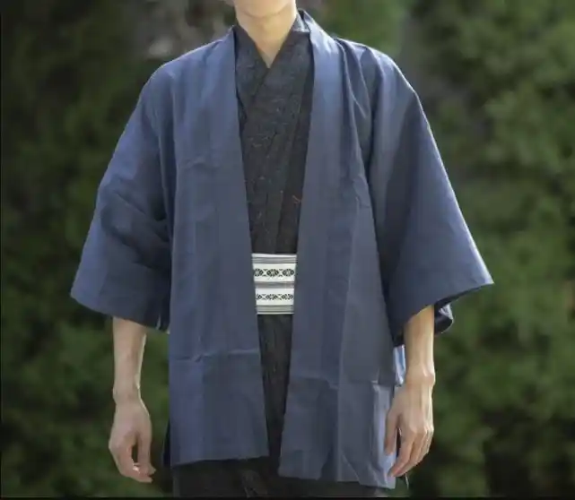

Traditional Costumes
Marvel at Japan's traditional attire, where each garment tells a story of elegance, identity, and Sthe delicate art of design.
Kimono

| Description |
|---|
| The most iconic and easily recognisable of all traditional Japanese wear, the kimono is still a staple piece for many Japanese people and is growing in international appeal too. Drawing influence from ancient Chinese style clothing, the kimono was worn initially with a hakama, a long skirt type piece that sometimes featured a divider down the middle. Over time, however, tastes changed, and it became far more popular for the kimono to be worn without the skirt and instead held together with a sash known as an obi. Typically worn for special occasions, both traditional and contemporary, the kimono has stood the test of time, it's flattering and body-hugging silhouette is a timeless representation of Japan’s great appreciation for carefully considered beauty. |
Hanten
| Description |
|---|
| A hanten is a winter coat and was typically worn by regular people during the Edo period. The jacket is a very flexible piece of clothing that can very seamlessly fit into the modern-day wardrobe. The throw-over style coat-jacket is padded and tailored for a cozy, but flattering fit. |
Haori

| Description |
|---|
| A more formal incarnation of the hanten, a haori is a medium-length jacket designed to be worn over the kimono. In previous times was only accessible to those of a higher social class, while in the Sengoku period, men would wear sleeveless variations of the haori over their armor like tabard was worn in Europe. Women also flirted with wearing the haori as a statement style piece, a movement spearheaded by geisha in the 1800s. |